건축 블록
In the early stages of the game, building can be a challenge as many sturdy building blocks require metal tools to obtain. However, there are a few building blocks that can be obtained with just stone tools.
More building blocks are obtainable with metal tools.
내용
Thatch
With just a Stone Knife, you are able to obtain Straw by breaking plant like blocks. This can be used to craft a very simple building material: Thatch. Thatch is a lightweight block that isn't affected by gravity, however players and other entities can pass right through it! It can also be crafted back into Straw if needed.


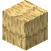

4
진흙 벽돌
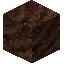
4
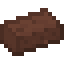
진흙은 땅 위에서나 강과 호수 바닥, 또는 늪지대의 낮은 곳에서 발견할 수 있습니다. 점토와 짚이 있다면 젖은 진흙 벽돌을 만들 수 있습니다.
멀티블록
이 벽돌들을 마른 땅에 올려놓은 후, 하루가 지나면 벽돌들이 굳고 진흙 벽돌이 됩니다.
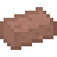
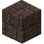
마른 진흙 벽돌들로는 진흙 벽돌 블록을 만들 수 있습니다. 필요하다면 벽돌로 계단이나 반 블록, 벽 역시 만들 수 있습니다.
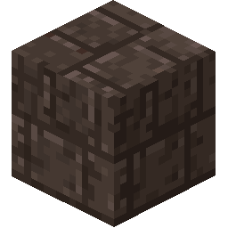
모든 진흙 벽돌의 종류
초벽
초벽은 다목적 건축/장식 블록입니다.
욋가지를 만들어서 설치하면, 쉽게 부서지고 플레이어와 몹들이 지나다닐 수 있습니다. 칠을 사용하면 욋가지를 단단하게 만들 수 있습니다.

6

욋가지를 단단하게 만들기 위해, 욋가지에 막대기를 추가하여 엮어야 합니다.
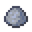

2
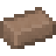
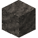
2
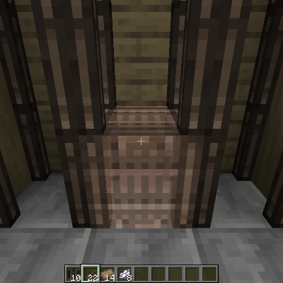
욋가지를 엮기 위해서는 4개의 막대기가 필요합니다.
막대기는 각각의 대각선과 위, 아래쪽에 추가할 수 있습니다. 막대기를 들고 욋가지에 오른쪽 버튼을 누르면 막대기를 추가할 수 있습니다. 다른 쪽 면을 선택하면 당신이 막대기를 추가할 면을 바꿀 수 있습니다.

욋가지에 막대기를 추가하기.
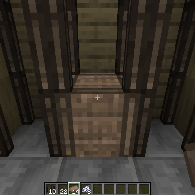
칠을 엮은 욋가지에 사용하면 초벽이 됩니다.
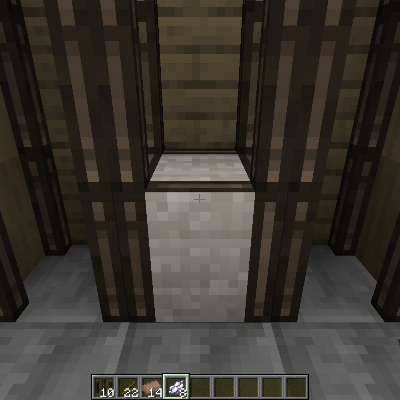
염료를 사용하면 초벽을 염색할 수 있습니다.
점토 블록과 이탄
점토는 점토 블록으로도 만들 수 있습니다. 점토 블록을 설치하고 부수면 다시 점토로 돌아옵니다. 별로 예쁘지는 않지만, 점토 블록을 얻기는 어렵지 않습니다.
이탄은 물 근처의 월드에서 생성되고 돌 도구로 캘 수 있습니다. 몇몇 식물들은 이탄 위에서 자랍니다.
그러나, 이탄은 꽤 잘 불에 탑니다.
점토 블록
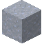